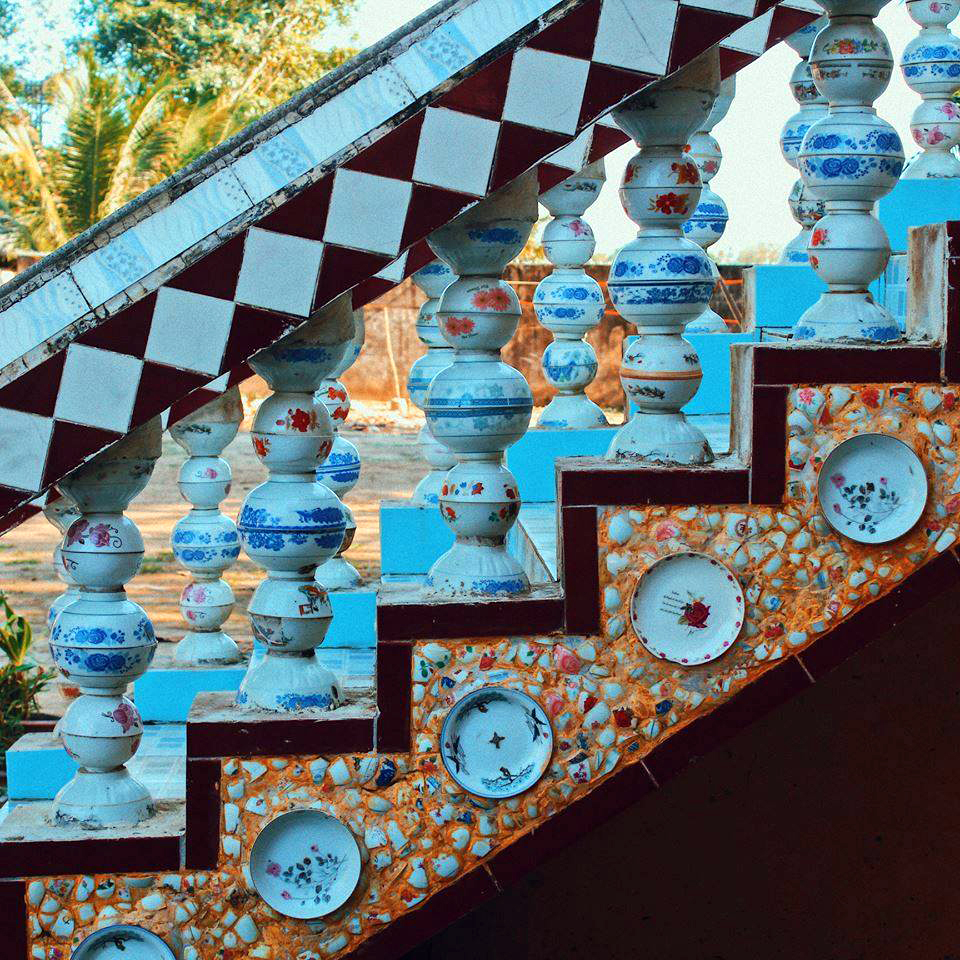

Chùa Chén Kiểu còn gọi là chùa Sà Lôn thuộc xã Đại Tâm, huyện Mỹ Xuyên, tỉnh Sóc Trăng nằm ngay quốc lộ 1A, cách thành phố Sóc Trăng khoảng 12 km, theo hướng từ thành phố Sóc Trăng đi Bạc Liêu.
Chùa Chén Kiểu còn gọi là chùa Sà Lôn. Nguồn: thamhiemmekong.com
Năm 1815, chùa Chén Kiểu bắt đầu xây dựng bằng các vật liệu lá cây, gỗ, đất… như bao ngôi chùa Khmer khác . Trong thời gian chiến tranh, dưới sức tàn phá của bom đạn, ngôi chánh điện của chùa bị hư hại nặng. Đến năm 1969, chùa được xây dựng lại theo kiến trúc như ngày nay, gồm: Chánh điện, sala, tháp bảo, nơi để sách kinh,… Trong quá trình xây dựng, do thiếu vật liệu nên các vị sư đã nảy ra sáng kiến là quyên góp chén, dĩa từ bà con trong phum, sóc để ốp lên tường. Ý tưởng này vừa tiết kiệm kinh phí xây dựng, vừa tạo nên những họa tiết trang trí ấn tượng. Cũng từ đó, chùa còn được nhân dân biết đến với tên gọi thứ hai: “Chùa Chén Kiểu”.
Chùa Chén Kiểu bắt đầu được xây dựng từ năm 1815. Nguồn: thamhiemmekong.com
Hoa văn trang trí lạ mắt từ chén, dĩa kiểu. Nguồn: thamhiemmekong.com
Ấn tượng đầu tiên khi vào chùa chính là cổng tam quan với 3 ngôi tòa tháp được chạm khắc hoa văn và màu sắc rực rỡ theo phong cách truyền thống Angkor Campuchia. Trong ba ngọn tháp, nổi bật với tháp giữa bên trong có lồng kính, tôn trí một pho tượng Phật ngồi uy nghi.
Cổng chùa theo phong cách truyền thống Angkor Campuchia. Nguồn: thamhiemmekong.com
Chung quanh chùa là tường rào trang trí hình tượng tiên nữ Apsara đang múa, tượng trưng cho hòa bình và thịnh vượng. Hai bên cổng vào có 2 tượng sư tử đá, mặt hướng ra đường như bảo vệ ngôi chùa. Trên thành cổng có dòng chữ Khmer và chữ quốc ngữ: “Chùa Sà Lôn (Chén Kiểu)”.
Khi đến tham quan ngôi chùa, ngoài được ngắm nhìn tác phẩm sáng tạo tuyệt vời, du khách còn thoải mái thưởng thức các món đặc sản của Sóc Trăng được tiểu thương bày bán bên cạnh ngôi chùa. Từng quầy hàng được sắp xếp theo khu vực rất đẹp mắt, có thể kể đến như: khô cá các loại, rau, củ quả tươi do nông dân xã Đại Tâm trồng và các sản phẩm khác của các địa phương trên địa bàn tỉnh quy tụ về đây phục vụ người tiêu dùng.